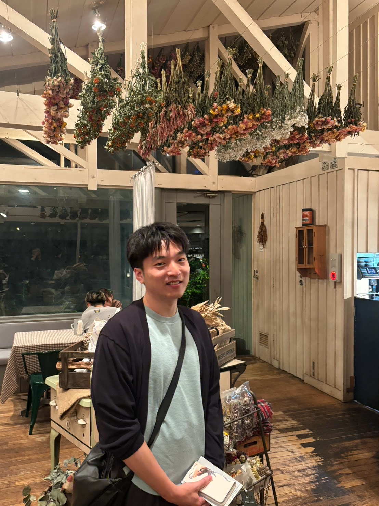

Entropt: Interference-Aware Pattern Optimization for Unlocking Entropy in DRAM
59th IEEE/ACM International Symposium on Microarchitecture · ACM Student Research Competition (MICRO SRC 2026)
Short Biography
1st year PhD Student The University of Tokyo
I am a 1st year PhD student in the Department of Computer Science at the University of Tokyo, supervised by Prof. Shinya Takamaeda-Yamazaki. My research interests lie in computer architecture and system design, including DRAM, memory systems, and processing-in-memory; architectural modeling and design-space exploration; and energy-efficient and heterogeneous computer systems for machine learning. My first-author work has been accepted at top-tier conferences, including ISCA and ICS.
I received my Bachelor of Science in 2024 and Master of Information Science and Technology in September 2026, both from the University of Tokyo. From September 2024 to February 2025, I was an exchange student at ETH Zurich under the supervision of Prof. Onur Mutlu. I continue to collaborate with the SAFARI Research Group.
tokuda-daichi_at_is.s.u-tokyo.ac.jp

Presented Entropt as a poster at MICRO SRC 2026!
Our preprint, Accelerating LLM Decoding with In-DRAM Parallelism, is now available on arXiv!
Gave an invited talk on processing-using-DRAM at FIT 2026!
Joined the xSIG 2026 10th Anniversary Panel as an invited panelist!
Presented Clutch at ICS 2026 and gave a talk at the co-located MCCSys workshop!
Presented PuDGhost at ISCA 2026 and gave a talk at the co-located MCCSys workshop!
PuDGhost was accepted at ISCA 2026!
Clutch was accepted at ICS 2026!
Gave an invited talk on hardware/algorithm co-design for decision trees at FIT 2025!
PUDTune was accepted by IEEE Computer Architecture Letters (CAL)!
Computer Architecture and System Design
Research output
59th IEEE/ACM International Symposium on Microarchitecture · ACM Student Research Competition (MICRO SRC 2026)
arXiv preprint · November 2026
International Conference on Supercomputing (ICS 2026)
53rd Annual International Symposium on Computer Architecture (ISCA 2026)
IEEE Computer Architecture Letters (CAL)
ACM Transactions on Reconfigurable Technology and Systems (ACM TRETS) · Presented at FPT 2024
NeurIPS 2024 Workshop on Machine Learning with New Compute Paradigms (MLNCP 2024)
Background
Present
Ph.D. student in Computer Science
Graduate School of Information Science and Technology
Advisor: Prof. Shinya Takamaeda-Yamazaki
Apr 2024 — Sep 2026
Master of Information Science and Technology
Department of Computer Science, Graduate School of Information Science and Technology
Advisor: Prof. Shinya Takamaeda-Yamazaki
Sep 2024 — Feb 2025
Exchange student
Department of Information Technology and Electrical Engineering
Advisor: Prof. Onur Mutlu
Apr 2020 — Mar 2024
Bachelor of Science
Department of Information Science, Faculty of Science
Advisor: Prof. Shinya Takamaeda-Yamazaki
Apr — Sep 2024 · The University of Tokyo
Logic circuit design and FPGA implementation with SystemVerilog and Vivado for third-year undergraduates.
Sep 2027 — Aug 2029 Upcoming
The Funai Foundation for Information Technology
From Apr 2027 Upcoming
Japan Society for the Promotion of Science
From Oct 2026
Japan Science and Technology Agency
From Oct 2026
Japan Science and Technology Agency
From experiments on real memory chips to FPGA prototypes and systems software.
Recognition
Sep 2026
“Interference from Non-Operand Data in Processing-using-DRAM”
Aug 2026
“When Research Takes Flight: Perspectives from Recent Top-Conference Authors”
Mar 2026
IEICE Technical Committee on Computer Systems (CPSY), SWoPP 2025 · One of 2 recipients among 38 presentations.
Sep 2025
“Hardware/Algorithm Co-design for Gradient Boosting Decision Trees via Bit-Level Early-Termination for Embedded Systems”
Aug 2024
Hardware/algorithm co-design for gradient boosting decision trees · One of 3 awards among 26 submissions.
tokuda-daichi_at_is.s.u-tokyo.ac.jp